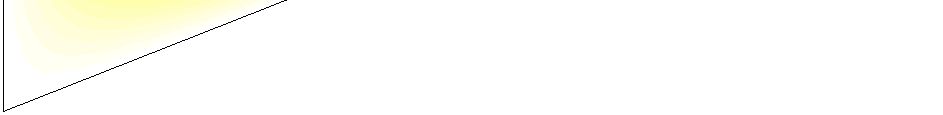
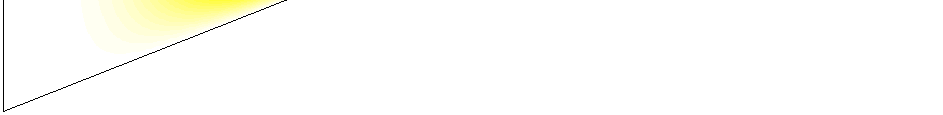

An Introduction to
Bayesian Nonparametric Modelling
Yee Whye Teh
Gatsby Computational Neuroscience Unit
University College London
September, 2009 / MLSS Cambridge
Outline
Some Examples of Parametric Models
Bayesian Nonparametric Modelling
Infinite Mixture Models
Dirichlet Processes
Indian Buffet and Beta Processes
Hierarchical Dirichlet Processes
Pitman-Yor Processes
Summary
Outline
Some Examples of Parametric Models
Bayesian Nonparametric Modelling
Infinite Mixture Models
Dirichlet Processes
Indian Buffet and Beta Processes
Hierarchical Dirichlet Processes
Pitman-Yor Processes
Summary
Regression with Basis Functions
I Supervised learning of a function f ∗ : X → Y from training data
{xi, yi}n .
i=1
*
*
*
*
*
*
*
*
Regression with Basis Functions
I Assume a set of basis functions φ1, . . . , φK and parametrize a function:
K
X
f (x ; w) =
wk φk (x)
k =1
Parameters w = {w1, . . . , wK }.
I Find optimal parameters
n
�
�2
n
�
�2
X
X
argmin
�
�
�
�
�yi − f (xi ; w)�
= argmin
�yi − PK
w
k =1
k œÜk (xi )�
w
�
�
w
�
�
i=1
i=1
I We will be Bayesian in this lecture, so we need to rephrase using
probabilistic model with priors on parameters:
yi |xi , w = f (xi ; w) + �i
�i ‚ຠN (0, œÉ2)
wk ∼ N (0, τ 2)
I Computer posterior p(w|{xi , yi }).
Regression with Basis Functions
K
X
f (x ; w) =
wk φk (x)
k =1
I What basis functions to use?
I How many basis functions to use?
I Do we really believe that the true f ∗(x ) can be expressed as
f ∗(x ) = f (x ; w∗) for some w∗?
�i ‚ຠN (0, œÉ2)
I Do we believe the noise process is Gaussian?
Density Estimation with Mixture Models
I Unsupervised learning of a density f ∗(x ) from training samples {xi }.
* *
* *
*
*
*** * * * *
* *
*
I Perhaps use an exponential family distribution, e.g. Gaussian?
N (x; ¬µ, Œ£) = |2œÄŒ£|−12 exp −1(x − ¬µ)>Œ£‚àí1(x − ¬µ)�
2
Unimodal, restrictive shape, light tail...
I Use a mixture model instead,
K
X
f (x ) =
πkN (x; µk, Σk)
k =1
I Do we believe that the true density is a mixture of K components?
I How many mixture components to use?
Latent Variable Modelling
I Say we have n vector observations x1, . . . , xn.
I Model each observation as a linear combination of K latent sources:
K
X
xi =
Œõk yik + �i
k =1
yik : activity of source k in datum i.
Λk : basis vector describing effect of source k .
I Examples include principle components analysis, factor analysis,
independent components analysis.
I How many sources are there?
I Do we believe that K sources is sufficient to explain all our data?
I What prior distribution should we use for sources?
Topic Modelling with Latent Dirichlet Allocation
I Infer topics from a document corpus, topics
being sets of words that tend to co-occur
together.
πj
I Using (Bayesian) latent Dirichlet allocation:
πj ∼ Dirichlet( α , . . . , α )
K
K
θ
zji
k ∼ Dirichlet( β , . . . , β )
W
W
zji |πj ∼ Multinomial(πj )
xji |zji , θz ∼ Multinomial(θ )
ji
zji
xji
θk
words i=1...nd
topics k=1...K
I How many topics can we find from the
document j=1...D
corpus?
Outline
Some Examples of Parametric Models
Bayesian Nonparametric Modelling
Infinite Mixture Models
Dirichlet Processes
Indian Buffet and Beta Processes
Hierarchical Dirichlet Processes
Pitman-Yor Processes
Summary
Modelling Data
I Models are almost never correct for real world data.
I How do we deal with model misfit?
I Quantify closeness to true model, and optimality of fitted model;
I Model selection or averaging;
I Increase the flexibility of your model class.
I Bayesian nonparametrics are good solutions from the second and third
perspectives.
Model Selection and Model Averaging
I Data x = {x1, x2, . . . , xn}.
I Model Mk parametrized by θk , for k = 1, 2, . . ..
I Marginal likelihood:
Z
p(x|Mk ) =
p(x|θk , Mk )p(θk , Mk )dθk
I Model selection and averaging:
p(k )p(θ
M
k |Mk )p(x|θk , Mk )
= argmax p(x|Mk ) or p(k, θk |x) = P
Mk
k 0 p(k 0)p(θk 0 |Mk 0 )p(x|θk 0 , Mk 0 )
I Model selection and averaging is to prevent overfitting and underfitting,
and are usually expense to compute.
I But reasonable and proper Bayesian methods should not overfit anyway
[Rasmussen and Ghahramani 2001].
Nonparametric Modelling
I What is a nonparametric model?
I A parametric model where the number of parameters increases
with data;
I A really large parametric model;
I A model over infinite dimensional function or measure spaces.
I A family of distributions that is dense in some large space.
I Why nonparametric models in Bayesian theory of learning?
I broad class of priors that allows data to “speak for itself”;
I side-step model selection and averaging.
I How do we deal with the very large parameter spaces?
I Marginalize out all but a finite number of parameters;
I Define infinite space implicitly (akin to the kernel trick) using either
Kolmogorov Consistency Theorem or de Finetti’s Theorem.
Gaussian Processes
I A Gaussian process (GP) is a random function f : X → R such that for
any finite set of input points x1, . . . , xn,
f (x 




1)
m(x1)
c(x1, x1) . . . c(x1, xn)
.
.
.
.
.

.
 ∼ N 
.
 , 
.
. .
.


.


.


.
.

f (xn)
m(xn)
c(xn, x1) . . . c(xn, xn)
where the parameters are the mean function m(x ) and covariance
kernel c(x , y).
I Note: a random function f is a stochastic process. It is a collection of
random variables {f (x)}x∈ one for each possible input value x.
X
I Can also be expressed as
K
X
f (x ) =
wk φk (x) as K → ∞.
k =1
[Rasmussen and Williams 2006]
Posterior and Predictive Distributions
I How do we compute the posterior and predictive distributions?
I Training set (x1, y1), (x2, y2), . . . , (xn, yn) and test input xn+1.
I Out of the (uncountably infinitely) many random variables {f (x)}x∈X
making up the GP only n + 1 has to do with the data:
f (x1), f (x2), . . . , f (xn+1)
I Training data gives observations f (x1) = y1, . . . , f (xn) = yn. The
predictive distribution of f (xn+1) is simply
p(f (xn+1)|f (x1) = y1, . . . , f (xn) = yn)
which is easy to compute since f (x1), . . . , f (xn+1) is Gaussian.
I This can be generalized to noisy observations yi = f (xi ) + �i or non-linear
effects yi ∼ D(f (xi )) where D(θ) is a distribution parametrized by θ.
Consistency and Existence
I The definition of Gaussian processes only give finite dimensional
marginal distributions of the stochastic process.
I Fortunately these marginal distributions are consistent .
I For every finite set x ⊂ X we have a distinct distribution
px([f (x)]x∈x). These distributions are said to be consistent if
Z
px([f (x)]x∈x) =
px∪y([f (x)]x∈x∪y)d[f (x)]x∈y
for disjoint and finite x, y ⊂ X.
I The marginal distributions for the GP are consistent because
Gaussians are closed under marginalization.
I The Kolmogorov Consistency Theorem guarantees existence of GPs,
i.e. the whole stochastic process {f (x)}x∈ .
X
I Further information in Peter Orbanz’ lectures.
Outline
Some Examples of Parametric Models
Bayesian Nonparametric Modelling
Infinite Mixture Models
Dirichlet Processes
Indian Buffet and Beta Processes
Hierarchical Dirichlet Processes
Pitman-Yor Processes
Summary
Bayesian Mixture Models
I Let’s be Bayesian about mixture models, and place
priors over our parameters (and to compute
posteriors).
α
I First, introduce variable zi indicator which
component xi belongs to.
z
π
H
i |π ∼ Multinomial(π)
xi |zi = k, µ, Σ ∼ N (µk , Σk )
zi
θ∗k
I Second, introduce conjugate priors for parameters:
k = 1, . . . , K
xi
π ∼ Dirichlet( α , . . . , α )
K
K
i = 1, . . . , n
µk, Σk ∼ H = N -IW(0, s, d, Φ)
[Rasmussen 2000]
Gibbs Sampling for Bayesian Mixture Models
I All conditional distributions are simple to compute:
p(zi = k|others) ∝ πk N (xi ; µk , Σk )
π|z ∼ Dirichlet( α + n
+ n
α
K
1(z), . . . , α
K
K (z))
µk, Σk|others ∼ N -IW(ν0, s0, d0, Φ0)
π
H
I Not as efficient as collapsed Gibbs sampling which
integrates out π, µ, Σ:
zi
θ∗k
α + n
k = 1, . . . , K
k (z−i )
p(z
K
i = k |others) ∝
×
α + n − 1
xi
p(xi |{xi0 : i0 6= i, zi0 = k})
i = 1, . . . , n
I Demo: fm_demointeractive.
Infinite Bayesian Mixture Models
I We will take K → ∞.
I Imagine a very large value of K .
α
I There are at most n < K occupied components, so
most components are empty. We can lump these
empty components together:
π
H
Occupied clusters:
α +nk(z−i)
p(z
K
i = k |others) ∝
)
z
θ∗
n − 1 + α p(xi |x−i
k
i
k
k = 1, . . . , K
Empty clusters:
xi
αK−K∗
p(z
K
i = 1, . . . , n
i = kempty|z−i ) ∝ n − 1 + αp(xi|{})
I Demo: dpm_demointeractive.
Infinite Bayesian Mixture Models
I We will take K → ∞.
I Imagine a very large value of K .
α
I There are at most n < K occupied components, so
most components are empty. We can lump these
empty components together:
π
H
Occupied clusters:
α +nk(z−i)
p(z
K
i = k |others) ∝
)
z
θ∗
n − 1 + α p(xi |x−i
k
i
k
k = 1, . . . , K
Empty clusters:
xi
αK−K∗
p(z
K
i = 1, . . . , n
i = kempty|z−i ) ∝ n − 1 + αp(xi|{})
I Demo: dpm_demointeractive.
Infinite Bayesian Mixture Models
I The actual infinite limit of finite mixture models does not make sense:
any particular component will get a mixing proportion of 0.
I In the Gibbs sampler we bypassed this by lumping empty clusters
together.
I Other better ways of making this infinite limit precise:
I Look at the prior clustering structure induced by the Dirichlet prior
over mixing proportions—Chinese restaurant process.
I Re-order components so that those with larger mixing proportions
tend to occur first, before taking the infinite limit—stick-breaking
construction.
I Both are different views of the Dirichlet process (DP).
I DPs can be thought of as infinite dimensional Dirichlet distributions.
I The K → ∞ Gibbs sampler is for DP mixture models.
Outline
Some Examples of Parametric Models
Bayesian Nonparametric Modelling
Infinite Mixture Models
Dirichlet Processes
Measure Theoretic Probability Theory
Representations of Dirichlet Processes
Indian Buffet and Beta Processes
Hierarchical Dirichlet Processes
Pitman-Yor Processes
Summary
A Tiny Bit of Measure Theoretic Probability Theory
I A σ-algebra Σ is a family of subsets of a set Θ such that
I Σ is not empty;
I If A ∈ Σ then Θ\A ∈ Σ;
I If A1, A2, . . . ∈ Σ then ∪∞ A
i=1
i ∈ Σ.
I (Θ, Σ) is a measure space and A ∈ Σ are the measurable sets.
I A measure µ over (Θ, Σ) is a function µ : Σ → [0, ∞] such that
I µ(∅) = 0;
I If A1, A2, . . . ∈ Σ are disjoint then µ(∪∞ A
µ(A
i=1
i ) = P∞
i=1
i ).
I Everything we consider here will be measurable.
I A probability measure is one where µ(Θ) = 1.
I Given two measure spaces (Θ, Σ) and (∆, Φ), a function f : Θ → ∆ is
measurable if f −1(A) ∈ Σ for every A ∈ Φ.
A Tiny Bit of Measure Theoretic Probability Theory
I If p is a probability measure on (Θ, Σ), a random variable X taking
values in ∆ is simply a measurable function X : Θ → ∆.
I Think of the probability space (Θ, Σ, p) as a black-box random
number generator, and X as a function taking random samples in Θ
and producing random samples in ∆.
I The probability of an event A ∈ Φ is p(X ∈ A) = p(X −1(A)).
I A stochastic process is simply a collection of random variables {Xi }i∈I
over the same measure space (Θ, Σ), where I is an index set.
I What distinguishes a stochastic process from, say, a graphical
model is that I can be infinite, even uncountably so.
I This raises issues of how do you even define them and how do you
ensure that they can even existence (mathematically speaking).
I Stochastic processes form the core of many Bayesian nonparametric
models.
I Gaussian processes, Poisson processes, gamma processes,
Dirichlet processes, beta processes...
Dirichlet Distributions
I A Dirichlet distribution is a distribution over the K -dimensional probability
simplex:
‚àÜK = �(œÄ1, . . . , œÄK ) : œÄk ‚â• 0, P œÄ
k
k = 1
I We say (π1, . . . , πK ) is Dirichlet distributed,
(π1, . . . , πK ) ∼ Dirichlet(λ1, . . . , λK )
with parameters (λ1, . . . , λK ), if
n
Γ(P λ
Y
p
k )
(π
k
1, . . . , πK ) =
πλk−1
Q
Γ(λ
k
k
k ) k=1
I Equivalent to normalizing a set of independent gamma variables:
(π1, . . . , πK ) =
1
(γ
P
γ
1, . . . , γK )
k
k
γk ∼ Gamma(λk)
for k = 1, . . . , K



Dirichlet Distributions
Dirichlet Processes
I A Dirichlet Process (DP) is a random probability measure G over (Θ, Σ)
such that for any finite set of measurable partitions A ˙
1∪ . . . ˙
∪AK = Θ,
(G(A1), . . . , G(AK )) ∼ Dirichlet(λ(A1), . . . , λ(AK ))
where λ is a base measure.
A4
A1
6
A
A3
A5
A2
I The above family of distributions is consistent (next slide), and
Kolmogorov Consistency Theorem can be applied to show existence (but
there are technical conditions restricting the generality of the definition).
[Ferguson 1973, Blackwell and MacQueen 1973]
Consistency of Dirichlet Marginals
I If we have two partitions (A1, . . . , AK ) and (B1, . . . , BJ ) of Θ, how do we
see if the two Dirichlets are consistent?
I Because Dirichlet variables are normalized gamma variables and sums
of gammas are gammas, if (I1, . . . , Ij ) is a partition of (1, . . . , K ),
�
�
�
�
P
π
π ∼ Dirichlet P
λ
λ
i∈I
i , . . . , P
i
i , . . . , P
i
1
i∈Ij
i∈I1
i∈Ij
Consistency of Dirichlet Marginals
I Form the common refinement (C1, . . . , CL) where each C` is the
intersection of some Ak with some Bj . Then:
By definition, (G(C1), . . . , G(CL)) ∼ Dirichlet(λ(C1), . . . , λ(CL))
(G(A1), . . . , G(AK )) = P
G(C
G(C
C
`), . . . , P
`)�
` ⊂A1
C`⊂AK
∼ Dirichlet(λ(A1), . . . , λ(AK ))
Similarly, (G(B1), . . . , G(BJ )) ∼ Dirichlet(λ(B1), . . . , λ(BJ ))
so the distributions of (G(A1), . . . , G(AK )) and (G(B1), . . . , G(BJ )) are
consistent.
I Demonstration: DPgenerate.
Parameters of Dirichlet Processes
I Usually we split the λ base measure into two parameters λ = αH:
I Base distribution H , which is like the mean of the DP.
I Strength parameter α, which is like an inverse-variance of the DP.
I We write:
G ∼ DP(α, H)
if for any partition (A1, . . . , AK ) of Θ:
(G(A1), . . . , G(AK )) ∼ Dirichlet(αH(A1), . . . , αH(AK ))
I The first and second moments of the DP:
Expectation:
E[G(A)] = H(A)
H(A)(1 − H(A))
Variance:
V[G(A)] =
α + 1
where A is any measurable subset of Θ.
Representations of Dirichlet Processes
I Draws from Dirichlet processes will always place all their mass on a
countable set of points:
∞
X
G =
πkδθ∗k
k =1
where P π
∈ Θ.
k
k = 1 and θ∗
k
I What is the joint distribution over π1, π2, . . . and θ∗, θ∗, . . .?
1
2
I Since G is a (random) probability measure over Θ, we can treat it as a
distribution and draw samples from it. Let
θ1, θ2, . . . ∼ G
be random variables with distribution G.
I What is the marginal distribution of θ1, θ2, . . . with G integrated out?
I There is positive probability that sets of θi ’s can take on the same
value θ∗ for some k, i.e. the θ
k
i ’s cluster together. How do these
clusters look like?
I For practical modelling purposes this is sufficient. But is this
sufficient to tell us all about G?
Stick-breaking Construction
∞
X
G =
πkδθ∗k
k =1
I There is a simple construction giving the joint distribution of π1, π2, . . .
and θ∗, θ∗, . . . called the stick-breaking construction.
1
2
θ∗ ∼
k
H
k −1
π(1)
π
Y
k = vk
(1 − vi )
(2)
π
(3)
π
i=1
(4)
π
vk ∼ Beta(1, α)
(5)
π
(6)
π
I Also known as the GEM distribution, write π ∼ GEM(α).
[Sethuraman 1994]
Pólya Urn Scheme
θ1, θ2, . . . ∼ G
I The marginal distribution of θ1, θ2, . . . has a simple generative process
called the Pólya urn scheme.
α
δ
θ
H + Pn−1
i=1
θi
n|θ1:n−1 ∼
α + n − 1
I Picking balls of different colors from an urn:
I Start with no balls in the urn.
I with probability ∝ α, draw θn ∼ H, and add a ball of color θn into urn.
I With probability ∝ n − 1, pick a ball at random from the urn, record
θn to be its color and return two balls of color θn into urn.
I Pólya urn scheme is like a “representer” for the DP—a finite projection of
an infinite object G.
I Also known as the Blackwell-MacQueen urn scheme.
[Blackwell and MacQueen 1973]
Chinese Restaurant Process
I θ1, . . . , θn take on K < n distinct values, say θ∗, . . . , θ∗ .
1
K
I This defines a partition of (1, . . . , n) into K clusters, such that if i is in
cluster k , then θi = θ∗.
k
I The distribution over partitions is a Chinese restaurant process (CRP).
I Generating from the CRP:
I First customer sits at the first table.
I Customer n sits at:
I Table k with probability
nk
where n
α+n−1
k is the number of customers
at table k .
I A new table K + 1 with probability
α
.
α+n−1
I Customers ⇔ integers, tables ⇔ clusters.
2
4
5
8
3
9
6
7
1
Chinese Restaurant Process
!=30, d=0
200
150
100
table
50
00
2000
4000
6000
8000
10000
customer
I The CRP exhibits the clustering property of the DP.
I Rich-gets-richer effect implies small number of large clusters.
I Expected number of clusters is K = O(α log n).
Posterior of Dirichlet Processes
I Since G is a probability measure, we can draw samples from it,
G ∼ DP(α, H)
θ1, . . . , θn|G ∼ G
What is the posterior of G given observations of θ1, . . . , θn?
I The usual Dirichlet-multinomial conjugacy carries over to the
nonparametric DP as well:
δ
G|θ
θi
1, . . . , θn ∼ DP(α + n, αH+Pni=1
α
)
+n
Exchangeability
I Instead of deriving the Pólya urn scheme by marginalizing out a DP,
consider starting directly from the conditional distributions:
α
δ
θ
H + Pn−1
i=1
θi
n|θ1:n−1 ∼
α + n − 1
I For any n, the joint distribution of θ1, . . . , θn is:
αK QK h(θ∗)(m
p
nk − 1)!
(θ
k =1
k
1, . . . , θn) =
Qn
i − 1 + α
i=1
where h(θ) is density of θ under H, θ∗, . . . , θ∗ are the unique values, and
1
K
θ∗ occurred m
k
nk times among θ1, . . . , θn.
I The joint distribution is exchangeable wrt permutations of θ1, . . . , θn.
I De Finetti’s Theorem says that there must be a random probability
measure G making θ1, θ2, . . . iid. This is the DP.
De Finetti’s Theorem
Let θ1, θ2, . . . be an infinite sequence of random variables with joint
distribution p. If for all n ≥ 1, and all permutations σ ∈ Σn on n objects,
p(θ1, . . . , θn) = p(θσ(1), . . . , θσ(n))
That is, the sequence is infinitely exchangeable. Then there exists a latent
random parameter G such that:
n
Z
Y
p(θ1, . . . , θn) =
p(G)
p(θi |G)dG
i=1
where ρ is a joint distribution over G and θi ’s.
I θi ’s are independent given G.
I Sufficient to define G through the conditionals p(θn|θ1, . . . , θn−1).
I G can be infinite dimensional (indeed it is often a random measure).
I The set of infinitely exchangeable sequences is convex and it is an
important theoretical topic to study the set of extremal points.
I Partial exchangeability: Markov, group, arrays,...
Outline
Some Examples of Parametric Models
Bayesian Nonparametric Modelling
Infinite Mixture Models
Dirichlet Processes
Indian Buffet and Beta Processes
Hierarchical Dirichlet Processes
Pitman-Yor Processes
Summary
Binary Latent Variable Models
I Consider a latent variable model with binary sources/features,
(1 with probability µ
z
k ;
ik =
0
with probability 1 − µk .
I Example: Data items could be movies like “Terminator 2”, “Shrek” and
“Lord of the Rings”, and features could be “science fiction”, “fantasy”,
“action” and “Arnold Schwarzenegger”.
I Place beta prior over the probabilities of features:
µk ∼ Beta( α , 1)
K
I We will again take K → ∞.
Indian Buffet Processes
I The Indian Buffet Process (IBP) is akin to the Chinese restaurant
process but describes each customer with a binary vector instead of
cluster.
I Generating from an IBP:
I Parameter α.
I First customer picks Poisson(α) dishes to eat.
I Subsequent customer i picks dish k with probability mk ; and picks
i
Poisson( α ) new dishes.
i
Tables
Dishes
Customers
Customers
Indian Buffet Processes and Exchangeability
I The IBP is infinitely exchangeable. For this to make sense, we need to
“forget” the ordering of the dishes.
I “Name” each dish k with a Λ∗ drawn iid from H .
k
I Each customer now eats a set of dishes: Ψi = {Λk : zik = 1}.
I The joint probability of Ψ1, . . . , Ψn can be calculated:
n
!
K
X 1
Y (m
p
k − 1)!(n − mk )!
(Ψ1, . . . , Ψn) = exp −α
αK
h(Λ∗
i
n!
k )
i=1
k =1
K : total number of dishes tried by n customers.
Λ∗: Name of k th dish tried.
k
mk : number of customers who tried dish Λ∗.
k
I De Finetti’s Theorem again states that there is some random measure
underlying the IBP.
I This random measure is the beta process.
[Griffiths and Ghahramani 2006, Thibaux and Jordan 2007]
Beta Processes
I A beta process B ∼ BP(c, αH) is a random discrete measure with form:
∞
X
B =
µkδθ∗k
k =1
where the points P = {(θ∗, µ
, µ
1
1), (θ∗
2
2), . . .} are spikes in a 2D Poisson
process with rate measure:
cµ−1(1 − µ)c−1dµαH(dθ)
I The beta process with c = 1 is the de Finetti measure for the IBP. When
c 6= 1 we have a two parameter generalization of the IBP.
I This is an example of a completely random measure.
I A beta process does not have Beta distributed marginals.
[Hjort 1990, Ghahramani et al. 2007]
Stick-breaking Construction for Beta Processes
I When c = 1 it was shown that the following generates a draw of B:
k −1
Y
vk ∼ Beta(1, α)
µk = (1 − vk)
(1 − vi )
θ∗ ∼
k
H
i=1
∞
X
B =
µkδθ∗k
k =1
I The above is the complement of the stick-breaking construction for DPs!
(1)
µ
π(1)
(2)
µ
(2)
π
(3)
µ
(3)
π
(4)
µ
(4)
π
(5)
µ
(5)
π
(6)
µ
(6)
π
[Teh et al. 2007]
Applications of Indian Buffet Processes
I The IBP can be used in concert with different likelihood models in a
variety of applications.
Z ∼ IBP(α)
X ∼ F (Z , Y )
p(Z , Y )p(X |Z , Y )
Y ∼ H
p(Z , Y |X ) =
p(X )
I Latent factor models for distributed representation [Griffiths and
Ghahramani 2005].
I Matrix factorization for collaborative filtering [Meeds et al 2007].
I Latent causal discovery for medical diagnostics [Wood et al 2006].
I Protein complex discovery [Chu et al 2006].
I Psychological choice behaviour [Görür and Rasmussen 2006].
I Independent Components Analysis [Knowles and Ghahramani 2007].
Infinite Independent Components Analysis
I Each image Xi is a linear combination of sparse features:
X
Xi =
Λk yik
k
where yik is activity of feature k with sparse prior. One possibility is a
mixture of a Gaussian and a point mass at 0:
yik = zik aik
aik ∼ N (0, 1)
Z ∼ IBP(α)
I An ICA model with infinite number of features.
[Knowles and Ghahramani 2007]
Outline
Some Examples of Parametric Models
Bayesian Nonparametric Modelling
Infinite Mixture Models
Dirichlet Processes
Indian Buffet and Beta Processes
Hierarchical Dirichlet Processes
Pitman-Yor Processes
Summary
Topic Modelling with Latent Dirichlet Allocation
I Infer topics from a document corpus, topics
being sets of words that tend to co-occur
π
together.
j
I Using (Bayesian) latent Dirichlet allocation:
πj ∼ Dirichlet( α , . . . , α )
K
K
zji
θk ∼ Dirichlet( β , . . . , β )
W
W
zji |πj ∼ Multinomial(πj )
xji |zji , θz ∼ Multinomial(θ )
ji
zji
xji
θk
words i=1...nd
topics k=1...K
I Can we take K → ∞?
document j=1...D
Hierarchical Dirichlet Processes
Hierarchical Dirichlet Processes
I Use a DP mixture for each group.
H
G
G
1
2
I Unfortunately there is no sharing of clusters
across different groups because H is smooth.
θ
θ
1i
2i
I Solution: make the base distribution H discrete.
I Put a DP prior on the common base distribution.
1i
x
x2i
[Teh et al. 2006]
Hierarchical Dirichlet Processes
H
I A hierarchical Dirichlet process:
G0
G0 ∼ DP(α0, H)
G1, G2|G0 ∼ DP(α, G0) iid
G
G
1
2
I Extension to larger hierarchies is straightforward.
θ
θ
1i
2i
1i
x
x2i
Hierarchical Dirichlet Processes
I Making G0 discrete forces shared cluster between G1 and G2.
Hierarchical Dirichlet Processes
I Document topic modelling:
I Allows documents to be modelled with DP mixtures of topics, with
topics shared across corpora.
I Infinite hidden Markov modelling:
I Allows HMMs with an infinite number of states, with transitions from
each allowable state to every other allowable state.
I Learning discrete structures from data:
I Determining number of objects, nonterminals, states etc.
Infinite Hidden Markov Models
β
πk
z0
z1
z2
zτ
θ∗
x1
x2
xτ
k
∞
β ∼ GEM(γ)
πk|β ∼ DP(α, β)
zi |zi−1, πz
∼ Multinomial(π
)
i−1
zi−1
θ∗ ∼
∼
k
H
xi |zi , θ∗z
F (θ∗ )
i
zi
I Hidden Markov models with an infinite number of states.
I Hierarchical DPs used to share information among transition probability
vectors prevents “run-away” states.
[Beal et al. 2002, Teh et al. 2006]
Hierarchical Modelling
φ1
φ2
φ3
x1i
x2i
x3i
i=1...n1
i=1...n2
i=1...n3
I Better estimation of parameters.
I Multitask learning, learning to learn: generalizing across related tasks.
Hierarchical Modelling
φ0
φ1
φ2
φ3
x1i
x2i
x3i
i=1...n1
i=1...n2
i=1...n3
I Better estimation of parameters.
I Multitask learning, learning to learn: generalizing across related tasks.
Outline
Some Examples of Parametric Models
Bayesian Nonparametric Modelling
Infinite Mixture Models
Dirichlet Processes
Indian Buffet and Beta Processes
Hierarchical Dirichlet Processes
Pitman-Yor Processes
Summary
Pitman-Yor Processes
I Two-parameter generalization of the Chinese restaurant process:
(
nk −β
p(customer n sat at table k |past) =
n−1+α
if occupied table
α+βK
n−1+α
if new table
I Associating each cluster k with a unique draw θ∗ ∼ H, the
k
corresponding Pólya urn scheme is also exchangeable.
I De Finetti’s Theorem states that there is a random measure underlying
this two-parameter generalization.
I This is the Pitman-Yor process.
I The Pitman-Yor process also has a stick-breaking construction:
k −1
∞
π
Y
X
k = vk
(1 − vi ) βk ∼ Beta(1 − β, α + βk) θ∗ ∼
π
k
H
G =
k δθ∗
k
i=1
k =1
[Pitman and Yor 1997, Perman et al. 1992]
Pitman-Yor Processes
I Two salient features of the Pitman-Yor process:
I With more occupied tables, the chance of even more tables
becomes higher.
I Tables with smaller occupancy numbers tend to have lower chance
of getting new customers.
I The above means that Pitman-Yor processes produce Zipf’s Law type
behaviour, with K = O(αnβ).
!=10, d=[.9 .5 0]
!=10, d=[.9 .5 0]
!=10, d=[.9 .5 0]
6
6
10
10
1
5
5
10
10
0.8
4
4
10
10
0.6
3
3
10
10
# tables
0.4
2
2
10
10
1
# tables with 1 customer
1
0.2
10
10
proportion of tables with 1 customer
0
0
10
10
0
0
1
2
3
4
5
6
0
1
2
3
4
5
6
0
1
2
3
4
5
6
10
10
10
10
10
10
10
10
10
10
10
10
10
10
10
10
10
10
10
10
10
# customers
# customers
# customers
Pitman-Yor Processes
Draw from a Pitman-Yor process
!=1, d=.5
!=1, d=.5
!=1, d=.5
5
5
10
10
250
4
4
10
200
10
3
3
10
150
10
table
2
2
100
10
10
# customers per table
# customers per table
1
1
50
10
10
0
0
0
10
10 0
1
2
3
0
2000
4000
6000
8000
10000
0
200
400
600
800
10
10
10
10
customer
# tables
# tables
Draw from a Dirichlet process
!=30, d=0
!=30, d=0
!=30, d=0
5
5
10
10
200
4
4
10
10
150
3
3
10
10
100
table
2
2
10
10
50
# customers per table
# customers per table
1
1
10
10
0
0
0
10
10 0
1
2
3
0
2000
4000
6000
8000
10000
0
50
100
150
200
250
10
10
10
10
customer
# tables
# tables
Hierarchical Pitman-Yor Language Models
I Pitman-Yor processes can be suitable models for many natural
phenomena with power-law statistics.
I Language modelling with Markov assumption:
p(Mary has a little lamb)
≈p(Mary)p(has|Mary)p(a|Mary has)p(little|has a)p(lamb|a little)
I Parameterize with p(w3|w1, w2) = Gw
[w
1 ,w2
3] and use a hierarchical
Pitman-Yor process prior:
Gw
|G ∼ PY(α
)
1 ,w2
w2
2, β2, Gw2
Gw |G
2
∅ ∼ PY(α1, β1, G∅)
G∅|U ∼ PY(α0, β0, U)
I State-of-the-art results, connection to Kneser-Ney smoothing.
[Goldwater et al. 2006a, Teh 2006b]
Image Segmentation with Pitman-Yor Processes
I Human segmentations of images also seem to follow power-law.
I An unsupervised image segmentation model based on dependent
hierarchical Pitman-Yor processes achieves state-of-the-art results.
[Sudderth and Jordan 2009]
Outline
Some Examples of Parametric Models
Bayesian Nonparametric Modelling
Infinite Mixture Models
Dirichlet Processes
Indian Buffet and Beta Processes
Hierarchical Dirichlet Processes
Pitman-Yor Processes
Summary
Summary
I Motivation for Bayesian nonparametrics:
I Allows practitioners to define and work with models with large
support, sidesteps model selection.
I New models with useful properties.
I Large variety of applications.
I Various standard Bayesian nonparametric models:
I Dirichlet processes
I Hierarchical Dirichlet processes
I Infinite hidden Markov models
I Indian buffet and beta processes
I Pitman-Yor processes
I Touched upon two important theoretical tools:
I Consistency and Kolmogorov’s Consistency Theorem
I Exchangeability and de Finetti’s Theorem
I Described a number of applications of Bayesian nonparametrics.
I Missing: Inference methods based on MCMC, variational etc,
consistency and convergence.
Other Introductions to Bayesian Nonparametrics
I Zoubin Gharamani, UAI 2005 Tutorial.
I Michael Jordan, NIPS 2005 Tutorial.
I Volker Tresp, ICML nonparametric Bayes workshop 2006.
I Peter Orbanz, Foundations of Nonparametric Bayesian Methods, 2009.
I I have given a number myself (check webpage).
I I have an introduction to Dirichlet processes [Teh 2007], and another to
hierarchical Bayesian nonparametric models [Teh and Jordan 2009].
Bayesian Nonparametric Software
I Hierarchical Bayesian Compiler (HBC). Hal Daume III.
http://www.cs.utah.edu/ hal/HBC/
I DPpackage. Alejandro Jara.
http://cran.r-project.org/web/packages/DPpackage/index.html
I Hierarchical Pitman Yor Language Model. Songfang Huang.
http://homepages.inf.ed.ac.uk/s0562315/progs/index.html
I Nonparametric Bayesian Mixture Models. Yee Whye Teh.
http://www.gatsby.ucl.ac.uk/ ywteh/research/software.html
I Others...
Outline
Relating Different Representations of Dirichlet Processes
Representations of Hierarchical Dirichlet Processes
Extended Bibliography
Representations of Dirichlet Processes
I Posterior Dirichlet process:
G ∼ DP(α, H)
θ ∼ H
⇐⇒
θ|
�
�
G ∼ G
G|θ ∼ DP α + 1, αH+δθ
α+1
I Pólya urn scheme:
α
δ
θ
H + Pn−1
i=1
θi
n|θ1:n−1 ∼
α + n − 1
I Chinese restaurant process:
(
nk
p(customer n sat at table k |past) =
n−1+α
if occupied table
α
n−1+α
if new table
I Stick-breaking construction:
k −1
∞
π
Y
X
k = βk
(1 − βi )
βk ∼ Beta(1, α)
θ∗ ∼
π
k
H
G =
k δθ∗
k
i=1
k =1
Posterior Dirichlet Processes
I Suppose G is DP distributed, and θ is G distributed:
G ∼ DP(α, H)
θ|G ∼ G
I We are interested in:
I The marginal distribution of θ with G integrated out.
I The posterior distribution of G conditioning on θ.
Posterior Dirichlet Processes
Conjugacy between Dirichlet Distribution and Multinomial.
I Consider:
(π1, . . . , πK ) ∼ Dirichlet(α1, . . . , αK )
z|(π1, . . . , πK ) ∼ Discrete(π1, . . . , πK )
z is a multinomial variate, taking on value i ∈ {1, . . . , n} with probability
πi.
I Then:
�
�
z ∼ Discrete
α1 , . . . , αK
P
α
P
α
i
i
i
i
(π1, . . . , πK )|z ∼ Dirichlet(α1 + δ1(z), . . . , αK + δK (z))
where δi (z) = 1 if z takes on value i, 0 otherwise.
I Converse also true.
Posterior Dirichlet Processes
I Fix a partition (A1, . . . , AK ) of Θ. Then
(G(A1), . . . , G(AK )) ∼ Dirichlet(αH(A1), . . . , αH(AK ))
P(θ ∈ Ai |G) = G(Ai )
I Using Dirichlet-multinomial conjugacy,
P(θ ∈ Ai ) = H(Ai )
(G(A1), . . . , G(AK ))|θ ∼ Dirichlet(αH(A1)+δθ(A1), . . . , αH(AK )+δθ(AK ))
I The above is true for every finite partition of Θ. In particular, taking a
really fine partition,
p(d θ) = H(dθ)
i.e. θ ∼ H with G integrated out.
I Also, the posterior G|θ is also a Dirichlet process:
�
Œ±H + Œ¥ �
θ
G|θ ∼ DP α + 1, α + 1
Posterior Dirichlet Processes
G ∼ DP(α, H)
θ ∼ H
⇐⇒
θ|
�
�
G ∼ G
G|θ ∼ DP α + 1, αH+δθ
α+1
Pólya Urn Scheme
I First sample:
θ1|G ∼ G
G ∼ DP(α, H)
⇐⇒
θ1 ∼ H
G|θ1 ∼ DP(α + 1, αH+δθ1
α
)
+1
I Second sample:
θ2|θ1, G ∼ G
G|θ1 ∼ DP(α + 1, αH+δθ1
α
)
+1
⇐⇒
θ
+δθ2
2|θ1 ∼ αH+δθ1
α
G|θ
)
+1
1, θ2 ∼ DP(α + 2, αH+δθ1
α+2
I nth sample
θ
δθi
n|θ1:n−1, G ∼ G
G|θ1:n−1 ∼ DP(α + n − 1, αH+Pn−1
i=1
α
)
+n−1
⇐⇒
θ
δθ
δ
i
θi
n|θ1:n−1 ∼ αH+Pn−1
i=1
α
G|θ
)
+n−1
1:n ∼ DP(α + n, αH+Pni=1
α+n
Stick-breaking Construction
I Returning to the posterior process:
G ∼ DP(α, H)
θ ∼ H
⇔
θ|G ∼ G
G|θ ∼ DP(α + 1, αH+δθ
α
)
+1
I Consider a partition (θ, Θ\θ) of Θ. We have:
(G(θ), G(Θ\θ))|θ ∼ Dirichlet((α + 1) αH+δθ
α
(θ), (α + 1) αH+δθ (Θ\θ))
+1
α+1
= Dirichlet(1, α)
I G has a point mass located at θ:
G = βδθ + (1 − β)G0
with
β ∼ Beta(1, α)
and G0 is the (renormalized) probability measure with the point mass
removed.
I What is G0?
Stick-breaking Construction
I Currently, we have:
θ ∼ H
G ∼ DP(α, H)
G|θ ∼ DP(α + 1, αH+δθ )
⇒
α+1
θ ∼ G
G = βδθ + (1 − β)G0
β ∼ Beta(1, α)
I Consider a further partition (θ, A1, . . . , AK ) of Θ:
(G(θ), G(A1), . . . , G(AK ))
=(β, (1 − β)G0(A1), . . . , (1 − β)G0(AK ))
∼ Dirichlet(1, αH(A1), . . . , αH(AK ))
I The agglomerative/decimative property of Dirichlet implies:
(G0(A1), . . . , G0(AK ))|θ ∼ Dirichlet(αH(A1), . . . , αH(AK ))
G0 ∼ DP(α, H)
Stick-breaking Construction
I We have:
G ∼ DP(α, H)
G = β1δθ∗ + (1 − β1)G1
1
G = β1δθ∗ + (1 − β1)(β2δθ∗ + (1 − β2)G2)
1
2
...
∞
X
G =
πkδθ∗k
k =1
where
π
Qk −1
k = βk
(1 − β
∼ H
i=1
i )
βk ∼ Beta(1, α)
θ∗k
π(1)
(2)
π
(3)
π
(4)
π
(5)
π
(6)
π
Outline
Relating Different Representations of Dirichlet Processes
Representations of Hierarchical Dirichlet Processes
Extended Bibliography
Stick-breaking Construction
I We shall assume the following HDP hierarchy:
G0 ∼ DP(γ, H)
Gj |G0 ∼ DP(α, G0) for j = 1, . . . , J
I The stick-breaking construction for the HDP is:
G0 = P∞ π
θ∗ ∼ H
k =1
0k δθ∗
k
k
π
Qk −1
0k = β0k
(1 − β
l=1
0l )
Œ≤0k ‚ຠBeta 1, Œ≥�
Gj = P∞ π
k =1
jk δθ∗
k
π
Qk −1
jk = βjk
(1 − β
β
l=1
jl )
Œ≤jk ‚ຠBeta Œ±Œ≤0k, Œ±(1 − Pkl=1 0l)�
Hierarchical Pòlya Urn Scheme
I Let G ∼ DP(α, H).
I We can visualize the Pòlya urn scheme as follows:
2
3
4
5
θ∗
θ∗
θ∗
θ∗
θ∗
1
θ∗
. . . . .
6
θ
. . . . .
1
θ
2
θ3 θ4 θ5 θ6 θ7
where the arrows denote to which θ∗ each θ
k
i was assigned and
θ1, θ2, . . . ∼ G i.i.d.
θ∗, θ∗, . . . ∼
1
2
H i.i.d.
(but θ1, θ2, . . . are not independent of θ∗, θ∗, . . .).
1
2
Hierarchical Pòlya Urn Scheme
I Let G0 ∼ DP(γ, H) and G1, G2|G0 ∼ DP(α, G0).
I The hierarchical Pòlya urn scheme to generate draws from G1, G2:
04
θ∗
θ∗
θ∗
θ∗
θ∗
θ∗
. . . . .
01
02
03
05
06
11
12
13
14
15 θ∗
θ∗
θ∗
θ∗
θ∗
θ∗
. . . . .
16
θ∗
θ∗
θ∗
θ∗
θ∗
θ∗
. . . . .
21
22
23
24
25
26
θ11 θ12 θ13 θ14 θ15 θ16 θ . . . . .
17
21
θ θ22 θ23 θ24 θ25 θ26 θ . . . . .
27
Chinese Restaurant Franchise
I Let G0 ∼ DP(γ, H) and G1, G2|G0 ∼ DP(α, G0).
I The Chinese restaurant franchise describes the clustering of data items
in the hierarchy:
A
ED
B
. . .
C
FG
1
1
6
7
. . .
2
4
. . .
A
B
C
D
G
3
5
3 E
F
6
4
25
7
Outline
Relating Different Representations of Dirichlet Processes
Representations of Hierarchical Dirichlet Processes
Extended Bibliography
Bibliography I
Dirichlet Processes and Beyond in Machine Learning
Dirichlet Processes were first introduced by [Ferguson 1973], while [Antoniak 1974] further developed DPs as well as introduce
the mixture of DPs. [Blackwell and MacQueen 1973] showed that the Pólya urn scheme is exchangeable with the DP being its de
Finetti measure. Further information on the Chinese restaurant process can be obtained at [Aldous 1985, Pitman 2002]. The DP
is also related to Ewens’ Sampling Formula [Ewens 1972]. [Sethuraman 1994] gave a constructive definition of the DP via a
stick-breaking construction. DPs were rediscovered in the machine learning community by [Neal 1992, Rasmussen 2000].
Hierarchical Dirichlet Processes (HDPs) were first developed by [Teh et al. 2006], although an aspect of the model was first
discussed in the context of infinite hidden Markov models [Beal et al. 2002]. HDPs and generalizations have been applied across
a wide variety of fields.
Dependent Dirichlet Processes are sets of coupled distributions over probability measures, each of which is marginally DP
[MacEachern et al. 2001]. A variety of dependent DPs have been proposed in the literature since then
[Srebro and Roweis 2005, Griffin 2007, Caron et al. 2007]. The infinite mixture of Gaussian processes of
[Rasmussen and Ghahramani 2002] can also be interpreted as a dependent DP.
Indian Buffet Processes (IBPs) were first proposed in [Griffiths and Ghahramani 2006], and extended to a two-parameter family
in [Ghahramani et al. 2007]. [Thibaux and Jordan 2007] showed that the de Finetti measure for the IBP is the beta process of
[Hjort 1990], while [Teh et al. 2007] gave a stick-breaking construction and developed efficient slice sampling inference algorithms
for the IBP.
Nonparametric Tree Models are models that use distributions over trees that are consistent and exchangeable. [Blei et al. 2004]
used a nested CRP to define distributions over trees with a finite number of levels. [Neal 2001, Neal 2003] defined Dirichlet
diffusion trees, which are binary trees produced by a fragmentation process. [Teh et al. 2008] used Kingman’s coalescent
[Kingman 1982b, Kingman 1982a] to produce random binary trees using a coalescent process. [Roy et al. 2007] proposed
annotated hierarchies, using tree-consistent partitions first defined in [Heller and Ghahramani 2005] to model both relational and
featural data.
Markov chain Monte Carlo Inference algorithms are the dominant approaches to inference in DP mixtures. [Neal 2000] is a
good review of algorithms based on Gibbs sampling in the CRP representation. Algorithm 8 in [Neal 2000] is still one of the best
algorithms based on simple local moves. [Ishwaran and James 2001] proposed blocked Gibbs sampling in the stick-breaking
representation instead due to the simplicity in implementation. This has been further explored in [Porteous et al. 2006]. Since
then there has been proposals for better MCMC samplers based on proposing larger moves in a Metropolis-Hastings framework
[Jain and Neal 2004, Liang et al. 2007a], as well as sequential Monte Carlo [Fearnhead 2004, Mansingkha et al. 2007].
Other Approximate Inference Methods have also been proposed for DP mixture models. [Blei and Jordan 2006] is the first
variational Bayesian approximation, and is based on a truncated stick-breaking representation. [Kurihara et al. 2007] proposed an
Bibliography II
Dirichlet Processes and Beyond in Machine Learning
improved VB approximation based on a better truncation technique, and using KD-trees for extremely efficient inference in large
scale applications. [Kurihara et al. 2007] studied improved VB approximations based on integrating out the stick-breaking
weights. [Minka and Ghahramani 2003] derived an expectation propagation based algorithm. [Heller and Ghahramani 2005]
derived tree-based approximation which can be seen as a Bayesian hierarchical clustering algorithm. [Daume III 2007] developed
admissible search heuristics to find MAP clusterings in a DP mixture model.
Computer Vision and Image Processing. HDPs have been used in object tracking
[Fox et al. 2006, Fox et al. 2007b, Fox et al. 2007a]. An extension called the transformed Dirichlet process has been used in
scene analysis [Sudderth et al. 2006b, Sudderth et al. 2006a, Sudderth et al. 2008], a related extension has been used in fMRI
image analysis [Kim and Smyth 2007, Kim 2007]. An extension of the infinite hidden Markov model called the nonparametric
hidden Markov tree has been introduced and applied to image denoising [Kivinen et al. 2007a, Kivinen et al. 2007b].
Natural Language Processing. HDPs are essential ingredients in defining nonparametric context free grammars
[Liang et al. 2007b, Finkel et al. 2007]. [Johnson et al. 2007] defined adaptor grammars, which is a framework generalizing both
probabilistic context free grammars as well as a variety of nonparametric models including DPs and HDPs. DPs and HDPs have
been used in information retrieval [Cowans 2004], word segmentation [Goldwater et al. 2006b], word morphology modelling
[Goldwater et al. 2006a], coreference resolution [Haghighi and Klein 2007], topic modelling
[Blei et al. 2004, Teh et al. 2006, Li et al. 2007]. An extension of the HDP called the hierarchical Pitman-Yor process has been
applied to language modelling [Teh 2006a, Teh 2006b, Goldwater et al. 2006a].[Savova et al. 2007] used annotated hierarchies to
construct syntactic hierarchies. Theses on nonparametric methods in NLP include [Cowans 2006, Goldwater 2006].
Other Applications. Applications of DPs, HDPs and infinite HMMs in bioinformatics include
[Xing et al. 2004, Xing et al. 2007, Xing et al. 2006, Xing and Sohn 2007a, Xing and Sohn 2007b]. DPs have been applied in
relational learning [Shafto et al. 2006, Kemp et al. 2006, Xu et al. 2006], spike sorting [Wood et al. 2006a, Görür 2007]. The HDP
has been used in a cognitive model of categorization [Griffiths et al. 2007]. IBPs have been applied to infer hidden causes
[Wood et al. 2006b], in a choice model [Görür et al. 2006], to modelling dyadic data [Meeds et al. 2007], to overlapping clustering
[Heller and Ghahramani 2007], and to matrix factorization [Wood and Griffiths 2006].
References I
Aldous, D. (1985).
Exchangeability and related topics.
In École d’Été de Probabilités de Saint-Flour XIII–1983, pages 1–198. Springer, Berlin.
Antoniak, C. E. (1974).
Mixtures of Dirichlet processes with applications to Bayesian nonparametric problems.
Annals of Statistics, 2(6):1152–1174.
Beal, M. J., Ghahramani, Z., and Rasmussen, C. E. (2002).
The infinite hidden Markov model.
In Advances in Neural Information Processing Systems, volume 14.
Blackwell, D. and MacQueen, J. B. (1973).
Ferguson distributions via Pólya urn schemes.
Annals of Statistics, 1:353–355.
Blei, D. M., Griffiths, T. L., Jordan, M. I., and Tenenbaum, J. B. (2004).
Hierarchical topic models and the nested Chinese restaurant process.
In Advances in Neural Information Processing Systems, volume 16.
Blei, D. M. and Jordan, M. I. (2006).
Variational inference for Dirichlet process mixtures.
Bayesian Analysis, 1(1):121–144.
Caron, F., Davy, M., and Doucet, A. (2007).
Generalized Polya urn for time-varying Dirichlet process mixtures.
In Proceedings of the Conference on Uncertainty in Artificial Intelligence, volume 23.
References II
Cowans, P. (2004).
Information retrieval using hierarchical Dirichlet processes.
In Proceedings of the Annual International Conference on Research and Development in Information Retrieval,
volume 27, pages 564–565.
Cowans, P. (2006).
Probabilistic Document Modelling.
PhD thesis, University of Cambridge.
Daume III, H. (2007).
Fast search for Dirichlet process mixture models.
In Proceedings of the International Workshop on Artificial Intelligence and Statistics, volume 11.
Ewens, W. J. (1972).
The sampling theory of selectively neutral alleles.
Theoretical Population Biology, 3:87–112.
Fearnhead, P. (2004).
Particle filters for mixture models with an unknown number of components.
Statistics and Computing, 14:11–21.
Ferguson, T. S. (1973).
A Bayesian analysis of some nonparametric problems.
Annals of Statistics, 1(2):209–230.
Finkel, J. R., Grenager, T., and Manning, C. D. (2007).
The infinite tree.
In Proceedings of the Annual Meeting of the Association for Computational Linguistics.
References III
Fox, E. B., Choi, D. S., and Willsky, A. S. (2006).
Nonparametric Bayesian methods for large scale multi-target tracking.
In Proceedings of the Asilomar Conference on Signals, Systems, and Computers, volume 40.
Fox, E. B., Sudderth, E. B., Choi, D. S., and Willsky, A. S. (2007a).
Tracking a non-cooperative maneuvering target using hierarchical Dirichlet processes.
In Proceedings of the Adaptive Sensor Array Processing Conference.
Fox, E. B., Sudderth, E. B., and Willsky, A. S. (2007b).
Hierarchical Dirichlet processes for tracking maneuvering targets.
In Proceedings of the International Conference on Information Fusion.
Ghahramani, Z., Griffiths, T. L., and Sollich, P. (2007).
Bayesian nonparametric latent feature models (with discussion and rejoinder).
In Bayesian Statistics, volume 8.
Goldwater, S. (2006).
Nonparametric Bayesian Models of Lexical Acquisition.
PhD thesis, Brown University.
Goldwater, S., Griffiths, T., and Johnson, M. (2006a).
Interpolating between types and tokens by estimating power-law generators.
In Advances in Neural Information Processing Systems, volume 18.
Goldwater, S., Griffiths, T. L., and Johnson, M. (2006b).
Contextual dependencies in unsupervised word segmentation.
In Proceedings of the 21st International Conference on Computational Linguistics and 44th Annual Meeting of the
Association for Computational Linguistics.
References IV
Görür, D. (2007).
Nonparametric Bayesian Discrete Latent Variable Models for Unsupervised Learning.
PhD thesis, Technischen Universität Berlin.
Görür, D., Jäkel, F., and Rasmussen, C. E. (2006).
A choice model with infinitely many latent features.
In Proceedings of the International Conference on Machine Learning, volume 23.
Griffin, J. E. (2007).
The Ornstein-Uhlenbeck Dirichlet process and other time-varying processes for Bayesian nonparametric inference.
Technical report, Department of Statistics, University of Warwick.
Griffiths, T. L., Canini, K. R., Sanborn, A. N., and Navarro, D. J. (2007).
Unifying rational models of categorization via the hierarchical Dirichlet process.
In Proceedings of the Annual Conference of the Cognitive Science Society, volume 29.
Griffiths, T. L. and Ghahramani, Z. (2006).
Infinite latent feature models and the Indian buffet process.
In Advances in Neural Information Processing Systems, volume 18.
Haghighi, A. and Klein, D. (2007).
Unsupervised coreference resolution in a nonparametric Bayesian model.
In Proceedings of the Annual Meeting of the Association for Computational Linguistics.
Heller, K. A. and Ghahramani, Z. (2005).
Bayesian hierarchical clustering.
In Proceedings of the International Conference on Machine Learning, volume 22.
References V
Heller, K. A. and Ghahramani, Z. (2007).
A nonparametric Bayesian approach to modeling overlapping clusters.
In Proceedings of the International Workshop on Artificial Intelligence and Statistics, volume 11.
Hjort, N. L. (1990).
Nonparametric Bayes estimators based on beta processes in models for life history data.
Annals of Statistics, 18(3):1259–1294.
Ishwaran, H. and James, L. F. (2001).
Gibbs sampling methods for stick-breaking priors.
Journal of the American Statistical Association, 96(453):161–173.
Jain, S. and Neal, R. M. (2004).
A split-merge Markov chain Monte Carlo procedure for the Dirichlet process mixture model.
Technical report, Department of Statistics, University of Toronto.
Johnson, M., Griffiths, T. L., and Goldwater, S. (2007).
Adaptor grammars: A framework for specifying compositional nonparametric Bayesian models.
In Advances in Neural Information Processing Systems, volume 19.
Kemp, C., Tenenbaum, J. B., Griffiths, T. L., Yamada, T., and Ueda, N. (2006).
Learning systems of concepts with an infinite relational model.
In Proceedings of the AAAI Conference on Artificial Intelligence, volume 21.
Kim, S. (2007).
Learning Hierarchical Probabilistic Models with Random Effects with Applications to Time-series and Image Data.
PhD thesis, Information and Computer Science, University of California at Irvine.
References VI
Kim, S. and Smyth, P. (2007).
Hierarchical dirichlet processes with random effects.
In Advances in Neural Information Processing Systems, volume 19.
Kingman, J. F. C. (1982a).
The coalescent.
Stochastic Processes and their Applications, 13:235–248.
Kingman, J. F. C. (1982b).
On the genealogy of large populations.
Journal of Applied Probability, 19:27–43.
Essays in Statistical Science.
Kivinen, J., Sudderth, E., and Jordan, M. I. (2007a).
Image denoising with nonparametric hidden Markov trees.
In IEEE International Conference on Image Processing (ICIP), San Antonio, TX.
Kivinen, J., Sudderth, E., and Jordan, M. I. (2007b).
Learning multiscale representations of natural scenes using Dirichlet processes.
In IEEE International Conference on Computer Vision (ICCV), Rio de Janeiro, Brazil.
Knowles, D. and Ghahramani, Z. (2007).
Infinite sparse factor analysis and infinite independent components analysis.
In International Conference on Independent Component Analysis and Signal Separation, volume 7 of Lecture Notes in
Computer Science. Springer.
Kurihara, K., Welling, M., and Vlassis, N. (2007).
Accelerated variational DP mixture models.
In Advances in Neural Information Processing Systems, volume 19.
References VII
Li, W., Blei, D. M., and McCallum, A. (2007).
Nonparametric Bayes pachinko allocation.
In Proceedings of the Conference on Uncertainty in Artificial Intelligence.
Liang, P., Jordan, M. I., and Taskar, B. (2007a).
A permutation-augmented sampler for Dirichlet process mixture models.
In Proceedings of the International Conference on Machine Learning.
Liang, P., Petrov, S., Jordan, M. I., and Klein, D. (2007b).
The infinite PCFG using hierarchical Dirichlet processes.
In Proceedings of the Conference on Empirical Methods in Natural Language Processing.
MacEachern, S., Kottas, A., and Gelfand, A. (2001).
Spatial nonparametric Bayesian models.
Technical Report 01-10, Institute of Statistics and Decision Sciences, Duke University.
http://ftp.isds.duke.edu/WorkingPapers/01-10.html.
Mansingkha, V. K., Roy, D. M., Rifkin, R., and Tenenbaum, J. B. (2007).
AClass: An online algorithm for generative classification.
In Proceedings of the International Workshop on Artificial Intelligence and Statistics, volume 11.
Meeds, E., Ghahramani, Z., Neal, R. M., and Roweis, S. T. (2007).
Modeling dyadic data with binary latent factors.
In Advances in Neural Information Processing Systems, volume 19.
Minka, T. P. and Ghahramani, Z. (2003).
Expectation propagation for infinite mixtures.
Presented at NIPS2003 Workshop on Nonparametric Bayesian Methods and Infinite Models.
References VIII
Neal, R. M. (1992).
Bayesian mixture modeling.
In Proceedings of the Workshop on Maximum Entropy and Bayesian Methods of Statistical Analysis, volume 11, pages
197–211.
Neal, R. M. (2000).
Markov chain sampling methods for Dirichlet process mixture models.
Journal of Computational and Graphical Statistics, 9:249–265.
Neal, R. M. (2001).
Defining priors for distributions using Dirichlet diffusion trees.
Technical Report 0104, Department of Statistics, University of Toronto.
Neal, R. M. (2003).
Density modeling and clustering using Dirichlet diffusion trees.
In Bayesian Statistics, volume 7, pages 619–629.
Perman, M., Pitman, J., and Yor, M. (1992).
Size-biased sampling of Poisson point processes and excursions.
Probability Theory and Related Fields, 92(1):21–39.
Pitman, J. (2002).
Combinatorial stochastic processes.
Technical Report 621, Department of Statistics, University of California at Berkeley.
Lecture notes for St. Flour Summer School.
Pitman, J. and Yor, M. (1997).
The two-parameter Poisson-Dirichlet distribution derived from a stable subordinator.
Annals of Probability, 25:855–900.
References IX
Porteous, I., Ihler, A., Smyth, P., and Welling, M. (2006).
Gibbs sampling for (Coupled) infinite mixture models in the stick-breaking representation.
In Proceedings of the Conference on Uncertainty in Artificial Intelligence, volume 22.
Rasmussen, C. E. (2000).
The infinite Gaussian mixture model.
In Advances in Neural Information Processing Systems, volume 12.
Rasmussen, C. E. and Ghahramani, Z. (2001).
Occam’s razor.
In Advances in Neural Information Processing Systems, volume 13.
Rasmussen, C. E. and Ghahramani, Z. (2002).
Infinite mixtures of Gaussian process experts.
In Advances in Neural Information Processing Systems, volume 14.
Rasmussen, C. E. and Williams, C. K. I. (2006).
Gaussian Processes for Machine Learning.
MIT Press.
Roy, D. M., Kemp, C., Mansinghka, V., and Tenenbaum, J. B. (2007).
Learning annotated hierarchies from relational data.
In Advances in Neural Information Processing Systems, volume 19.
Savova, V., Roy, D. M., Schmidt, L., and Tenenbaum, J. B. (2007).
Discovering syntactic hierarchies.
In Proceedings of the Annual Conference of the Cognitive Science Society, volume 29.
References X
Sethuraman, J. (1994).
A constructive definition of Dirichlet priors.
Statistica Sinica, 4:639–650.
Shafto, P., Kemp, C., Mansinghka, V., Gordon, M., and Tenenbaum, J. B. (2006).
Learning cross-cutting systems of categories.
In Proceedings of the Annual Conference of the Cognitive Science Society, volume 28.
Srebro, N. and Roweis, S. (2005).
Time-varying topic models using dependent Dirichlet processes.
Technical Report UTML-TR-2005-003, Department of Computer Science, University of Toronto.
Sudderth, E. and Jordan, M. I. (2009).
Shared segmentation of natural scenes using dependent Pitman-Yor processes.
In Advances in Neural Information Processing Systems, volume 21.
Sudderth, E., Torralba, A., Freeman, W., and Willsky, A. (2006a).
Depth from familiar objects: A hierarchical model for 3D scenes.
In Proceedings of the IEEE Conference on Computer Vision and Pattern Recognition.
Sudderth, E., Torralba, A., Freeman, W., and Willsky, A. (2006b).
Describing visual scenes using transformed Dirichlet processes.
In Advances in Neural Information Processing Systems, volume 18.
Sudderth, E., Torralba, A., Freeman, W., and Willsky, A. (2008).
Describing visual scenes using transformed objects and parts.
International Journal of Computer Vision, 77.
References XI
Teh, Y. W. (2006a).
A Bayesian interpretation of interpolated Kneser-Ney.
Technical Report TRA2/06, School of Computing, National University of Singapore.
Teh, Y. W. (2006b).
A hierarchical Bayesian language model based on Pitman-Yor processes.
In Proceedings of the 21st International Conference on Computational Linguistics and 44th Annual Meeting of the
Association for Computational Linguistics, pages 985–992.
Teh, Y. W. (2007).
Dirichlet processes.
Submitted to Encyclopedia of Machine Learning.
Teh, Y. W., Daume III, H., and Roy, D. M. (2008).
Bayesian agglomerative clustering with coalescents.
In Advances in Neural Information Processing Systems, volume 20.
Teh, Y. W., Görür, D., and Ghahramani, Z. (2007).
Stick-breaking construction for the Indian buffet process.
In Proceedings of the International Conference on Artificial Intelligence and Statistics, volume 11.
Teh, Y. W. and Jordan, M. I. (2009).
Hierarchical Bayesian nonparametric models with applications.
In Hjort, N., Holmes, C., Müller, P., and Walker, S., editors, To appear in Bayesian Nonparametrics: Principles and
Practice. Cambridge University Press.
Teh, Y. W., Jordan, M. I., Beal, M. J., and Blei, D. M. (2006).
Hierarchical Dirichlet processes.
Journal of the American Statistical Association, 101(476):1566–1581.
References XII
Thibaux, R. and Jordan, M. I. (2007).
Hierarchical beta processes and the Indian buffet process.
In Proceedings of the International Workshop on Artificial Intelligence and Statistics, volume 11.
Wood, F., Goldwater, S., and Black, M. J. (2006a).
A non-parametric Bayesian approach to spike sorting.
In Proceedings of the IEEE Conference on Engineering in Medicine and Biologicial Systems, volume 28.
Wood, F. and Griffiths, T. L. (2006).
Particle filtering for nonparametric Bayesian matrix factorization.
In Advances in Neural Information Processing Systems, volume 18.
Wood, F., Griffiths, T. L., and Ghahramani, Z. (2006b).
A non-parametric Bayesian method for inferring hidden causes.
In Proceedings of the Conference on Uncertainty in Artificial Intelligence, volume 22.
Xing, E., Sharan, R., and Jordan, M. (2004).
Bayesian haplotype inference via the dirichlet process.
In Proceedings of the International Conference on Machine Learning, volume 21.
Xing, E. P., Jordan, M. I., and Sharan, R. (2007).
Bayesian haplotype inference via the Dirichlet process.
Journal of Computational Biology, 14:267–284.
Xing, E. P. and Sohn, K. (2007a).
Hidden Markov Dirichlet process: Modeling genetic recombination in open ancestral space.
Bayesian Analysis, 2(2).
References XIII
Xing, E. P. and Sohn, K. (2007b).
A nonparametric Bayesian approach for haplotype reconstruction from single and multi-population data.
Technical Report CMU-MLD 07-107, Carnegie Mellow University.
Xing, E. P., Sohn, K., Jordan, M. I., and Teh, Y. W. (2006).
Bayesian multi-population haplotype inference via a hierarchical Dirichlet process mixture.
In Proceedings of the International Conference on Machine Learning, volume 23.
Xu, Z., Tresp, V., Yu, K., and Kriegel, H.-P. (2006).
Infinite hidden relational models.
In Proceedings of the Conference on Uncertainty in Artificial Intelligence, volume 22.
Document Outline